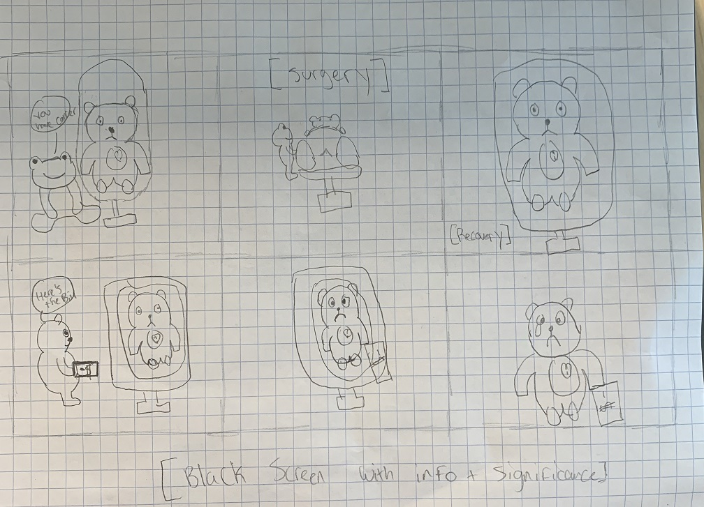

The social issue my team decided on was one of my own suggestion; The financial inequality of healthcare. Millions of Americans, every year, are forced to make financial and health sacrifices because of our current healthcare system in which insurance is the difference between life and death.
The scenes that I personally worked for this project are the spotlight scenes in which the camera zoomed in on the protagonist and the spotlight is shined on him. I also worked the scenes where the nurse received the bill and gave it to the protagonist. I handled the camera work, character positioning, and set design for those scenes. I handled all camera work including Dragonframe software, shot taking, etc. I used the camera and coded the lighting software. I also created the storyboard, which we used to guide our video creation process. Our story's narrative structure starts with a supposed solution to a tragedy, however, that solution only brings on more tragedy, and the resolution is left open-ended to the viewers in order to really push our message because there isn't any way for a viewer to imagine a happy ending.
I used the camera and handled the shot positioning by utilizing the arm stand and the onionskin function in the Dragonframe software to perfectly align my team’s shots for our intended vision. I specifically used the Dragonframe software by setting up the onion skin function, holding certain frames, analyzing and choosing an fps, previewed our video a multitude of times in order to edit shots, and I was the main member of the team who set up the next shot because I was at the forefront of our vision as I saw our video many times throughout the actual process of creating it. I coded the lighting software in adafruit by messing around with it and looking at a couple tutorials. I first attempted to see how we would need the lighting disc and what functionality we needed to include. Then, I researched and attempted to create a program that would work for us. This took a couple of attempts. Our final code is displayed below:
input.buttonsAB.onEvent(ButtonEvent.Click, function () { light.setBrightness(20) }) forever(function () { while (input.buttonA.isPressed()) { light.showRing( `white white white white white white white white white white` ) } while (input.buttonB.isPressed()) { light.setBrightness(255) } })
My work on our characters helped create the physical animation because the characters were the main supplemental element to the plot of our story. So, creating the characters was necessary in order to have the elements needed to move the plot forward. The set was another big supplemental element because in order for a story to work, it requires a setting and the hospital setting is the most appropriate for our story to work as it offers the most direct route to display financial inequality; surgery and the bill (without insurance). The storyboard was our actual blueprint, it served as the bones of a materialized plot. There’s really no way to create a physical animation without technology; we used a camera to take shots, a frame arm to keep our positioning steady, dragonframe software to line up with our previous shots and preview our video, and adafruit lighting disc for our lighting. All of these aspects serve to forward our message about the healthcare/financial inequity in the United States because our audience needs to understand the core message and the best way to do that is to formulate a coherent story and have elements that clear like our characters must be well-made, our set has to be well-set, our storyboard has to be well-written, and our technology ties everything together. Our video will affect our audience by illuminating an aspect of injustice in our country; nearly 10% of all americans lack health insurance and hospital care costs are incredible burdens on those who cannot afford them. Our video will affect our audience because it contains a very serious underlying theme with an easy to understand exterior.